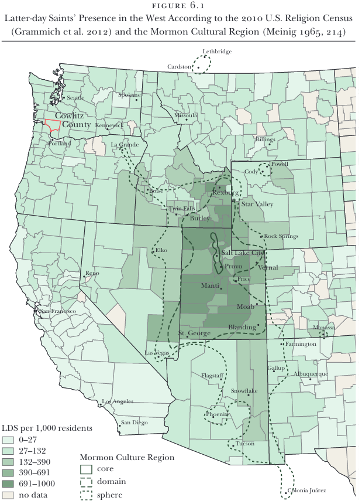

This week I finally got to lay my hands on a physical copy of my latest publication! It’s called “The Absence of a Religiolect among Latter-day Saints in Southwest Washington” and it’s in the latest Publication of the American Dialect Society, Speech in the Western States Volume III: Understudied Dialects by Valerie Fridland, Alicia Wassink, Lauren Hall-Lew, & Tyler Kendall. The physical copy was delivered to my office about two weeks ago, but my wife and daughter had just tested positive for covid-19 (they’re fine—very mild symptoms) so I was only just now able to see it now that my two-week quarantine is over.
A brief bit of background
I’m so excited to make it into this PADS volume! Just to give a brief timeline, I decided that I wanted to study English in the West around January 2015, after attending the American Dialect Society annual meeting in Portland and seeing the great talks on language in the West there. I did as much background and reading as I could over the next year or so and put together a grant proposal to go do fieldwork in southwest Washington. So when the first volume came out in January 2016, I was thrilled to see the latest research and to know that my research idea was a hot topic in American dialectology. That first volume, which covered California, Oregon, and Washington was extremely important in helping me shape my own research.
In 2016, my research in the West began in earnest. I got my grant to go do fieldwork and spend June and July in Cowlitz County. I had processed enough of the wordlist data in time to submit a paper to the American Dialect Society annual meeting. I was excited because it was my first big conference and was my introduction to the field as a dialectologist. Around that time Speech in the Western States Volume II came out, which focused on the Mountain West and included chapters on Arizona, New Mexico, Nevada, Utah, Colorado, and Montana. I was bummed I wasn’t able to make it into that volume, but I really didn’t have anything relevant to that area at the time and my research was in the beginning stages still.
So at that point, I figured I had missed the train. I hopped on the West bandwagon just a year or so too late—soon enough to really benefit from the current research, but not soon enough to be a part of that first conversation. Nevertheless, my research continued.
I had finished processing my Washington data and was working on my dissertation when I heard about a third volume of Speech in the Western States, this time focusing not on any geographic area within the West but rather on understudied communities. While I didn’t have any data from ethnic minorities from Washington, it did occur to me that I had a nice balance of members of the Church of Jesus Christ of Latter-day Saints to non-members. So I put together an abstract that compares the two groups, sent it to the editors, and the rest is history.
So I am just thrilled to be a part of this last volume on Speech in the Western States. The first two volumes were so important as my research was developing and so it just made it that much sweeter to be a part of the last volume.
A brief summary of the chapter
The question I had was this: do Latter-day Saints in southwest Washington sound different than non–Latter-day Saints? In other words, do they have a religiolect? I thought they might since they do in Utah and in Southern Alberta. Specifically, they tend to have more (or more exaggerated) Utah English features and tend to lag behind regional language changes. I thought I’d test for that same thing in Washington since I had a nice, balanced sample of Latter-day Saints to non–Latter-day Saints.
So, using fancy statistics and looking at vowels known to be variable in Utah and Washington, I conclude that there was very little difference between the two groups. So, a null result. The question then is this, why not? Why don’t Washingtonian Latter-day Saints have a religiolect while Albertan and Utahn Latter-day Saints do? I got into a lot of detail on Latter-day Saint culture and history and eventually conclude that they’re just too small of a minority, aren’t locally salient enough, and aren’t as entrenched in Latter-day Saint culture for a religiolect to have developed.
Lots of qualitative analysis
Overall the paper is dense. The whole chapter is 28 PDF pages, and a quarter of that is just references! I tend to be a little citation-heavy in all my writing to be honest, but over 100 references in this otherwise relatively short paper might have been a little much… But I had a lot of things to bring in: Utah English, Washington English, Latter-day Saints, religiolect, and GAMMs.
You may notice that the paper is and is a bit very top-heavy as well. If you just take the 6,962 words of actual body text, 2,967 of them (43%) is background and lit review. I go into a lot of detail on Utah English and Washington English, not to mention detail on Latter-day Saint culture and history. I then have 2,098 words (30%) of methods, which was also necessary since GAMMs can take a while to explain. I even had to leave out a lot of detail and refer readers to my dissertation! So you don’t even get to the linguistic analysis until three-quarters of the way into the paper!
The actual results are only 982 words (14%), but I think I made some good visualizations that explain things better than words do. Besides, it’s a null-result paper, so there’s not a lot to say other than, “nope and this isn’t significant either.” Finally, I finish with another 915 words (13%) of discussion and conclusion, which again go into detail about Latter-day Saint culture.
And, on top of all this this is three pages of notes, some of which are pretty long, an appendix with more visuals, and online supplementary material. So, a lot of background for what turns out to be relatively little actual phonetic analysis, but I think all that background was important to really appreciate the overall message of the paper. I think it strikes a nice balance of qualitative and quantitative work.
My favorite parts
One thing I’m particularly pleased with in that paper is the map on page 96. This one map shows a lot of information all at once, pulled together from a few different sources. First, it shows state and county boundaries, which come from publicly available sources. Those counties are then colored by number of Latter-day Saints per 1000 residents, which was data I had to pull from the US Religion Census. Finally, there are the outlines of the “Mormon Culture Region,” which was defined in Meinig (1965). For that, I had to scan in the original map and basically trace the original boundaries onto the digital map. I’m quite pleased with how it turned out, and the publishing editors did a fantastic job at sprucing it up so that it matches the look and feel of American Speech articles.

Another thing that this paper introduces is a method of outlier detection that I’ve been working on for a few years. I’ll give more detail on a future blog post, and perhaps a publication all on its own, but for now, you can read the details in page 102.
Finally, I quite like deep dives that I took in some of the footnotes. In particular, Note 2 gives a brief history of the Church of Jesus Christ of Latter-day Saints in Cowlitz County. This was data that was also pulled from several sources. I had to ask my mother-in-law if she knew any old-timers who might be able to fill in some of the gaps, which was very helpful. But my friend Jonathan Hepworth, a history PhD student at the University of Georgia, was the most help. He was able to track down some primary sources that helped fill in some of the details (like the date of creation of the Longview Stake)—and he did so in like an hour! I’m amazed at the resources that historians have access to.
Anyway, so that’s it for this paper.